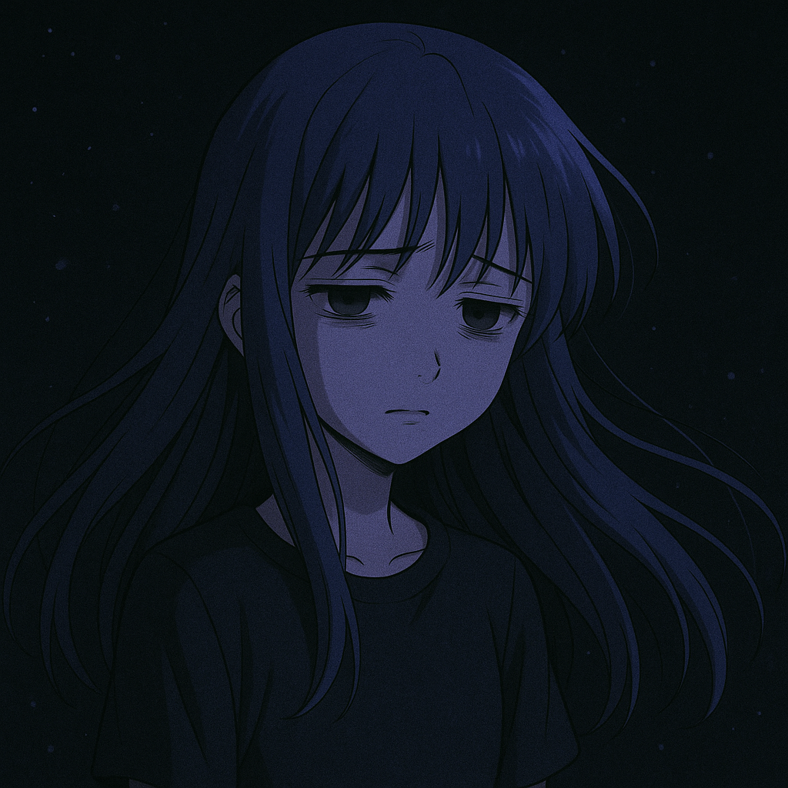

Artículo 6
El deterioro mental de Rika Furude
El deterioro mental de Rika Furude en Higurashi no Naku Koro ni es uno de los pilares más intensos y complejos de la serie.
A lo largo de los distintos arcos y líneas temporales, su sufrimiento se vuelve cada vez más evidente, hasta el punto de quebrar incluso su voluntad de vivir.
En este artículo encontrarás información sobre una situación que muchos no saben como explicarlo dentro la serie, dejando más preguntas que respuestas del personaje Rika Furude.
Vamos por partes para entenderlo bien:
1. El ciclo interminable de muertes y desesperación
Rika está atrapada en un bucle de tiempo donde revive una y otra vez el mes de junio de 1983, en el pueblo de Hinamizawa. Cada vez que muere, "reinicia" en un nuevo mundo, conservando sus recuerdos con la ayuda de Hanyuu, una entidad espiritual que la acompaña desde las sombras.
• Número de reinicios: Se estima que ha vivido más de cien años, experimentando su propia muerte incontables veces.
• Muertes violentas: Algunas muertes son horriblemente dolorosas (apuñalada, envenenada, desmembrada, etc.) lo que genera un trauma físico y emocional que se acumula.
2. La soledad de saber demasiado
Rika es la única, junto con Hanyuu, que recuerda las líneas temporales pasadas. Esto genera:
• Desesperanza: Al ver que todo termina igual sin importar sus acciones.
• Apatía: Hay momentos donde simplemente "actúa el papel" sin esperanza alguna de cambiar el destino.
• Cinismo: Deja de confiar en los demás, sabiendo que cada uno puede romperse o volverse contra ella en algún punto.
3. El desgaste de la lucha
Durante los arcos, se nota cómo la mente de Rika se va desgastando:
• Aceptación de la muerte: En algunos mundos, se rinde por completo y simplemente espera la muerte con resignación.
• Autoengaño y negación: Llega a convencerse de que no hay forma de vencer el destino.
• Disociación: Habla con una voz más adulta e irónica, como si se hubiera fragmentado para lidiar con el dolor.
Un claro ejemplo es el Arco de Minagoroshi, donde Rika revela su verdadero yo más cansado, oscuro y sabio, muy diferente de su fachada inocente.
4. Renacimiento y determinación
Todo ese deterioro mental también sirve para construir su evolución:
• En el arco de Matsuribayashi, Rika finalmente reúne las piezas del rompecabezas.
• A pesar del trauma acumulado, logra apoyarse en sus amigos, confía y lucha con esperanza.
• Vuelve a encontrarse a sí misma, elige vivir, y empieza a sanar.
Conclusión
"Rika es uno de los personajes más trágicos de Higurashi.
Su deterioro mental es el reflejo de una existencia atrapada en el sufrimiento, la impotencia y la muerte…
pero también de cómo el deseo de vivir, la amistad y la voluntad pueden romper incluso los peores ciclos."
La eternidad no es bondad: Reflexión desde la mirada de Rika Furude
Hay un límite sutil entre la inocencia y el olvido, entre la sabiduría y la resignación. Rika Furude lo cruzó tantas veces que ya no puede contar cuántas versiones de sí misma dejó atrás. Porque la verdadera locura no nace en el grito desesperado de la muerte, sino en la repetición infinita de los mismos errores, los mismos crímenes, los mismos adioses.
Y peor aún, en la certeza de que nadie más lo recuerda.
Rika aprendió a morir sin lágrimas, con la resignación elegante de quien sabe que su voz no llegará a nadie. Pero también aprendió a vivir sabiendo que la esperanza no se encuentra en una línea temporal perfecta, sino en los vínculos que se rehacen aunque se hayan roto mil veces.
En Higurashi, el terror no viene solo de las cuchillas, de la sangre o de los gritos… viene del aislamiento. De esa prisión mental que se construye con recuerdos que nadie más comparte. Rika, con sus ojos gastados y su sonrisa mecánica, nos habla del daño invisible de la eternidad.
El miedo de quedarse sola, de que nadie la recuerde ¿Para qué sirve seguir viviendo si todo vuelve a caer?
Pero también nos enseña algo que solo puede aprenderse en la oscuridad: que incluso una sola chispa de confianza (una palabra, una promesa, una decisión valiente) puede romper un ciclo de sufrimiento.
Rika Furude no es una niña maldita. Es un símbolo de resistencia emocional. De la pequeña fe que sigue existiendo en el corazón incluso cuando ya no creemos en el mañana.
Y esa fe, aunque cansada y herida, es lo que termina cambiando el destino.
Opinión de Walterex:
 "Este artículo me es sorprendente, y espero que para la audiencia también. Es una flecha directa al corazón. ¿Cómo es que una niña vivió tanto, y aún así seguía sonriendo? Rika Furude representa un dolor que muchos no ven, pero también una fuerza que nace del sufrimiento.
"Este artículo me es sorprendente, y espero que para la audiencia también. Es una flecha directa al corazón. ¿Cómo es que una niña vivió tanto, y aún así seguía sonriendo? Rika Furude representa un dolor que muchos no ven, pero también una fuerza que nace del sufrimiento.
Mientras escribía esto, no pude evitar sentir una mezcla de tristeza y admiración. Pensé en cuántas veces uno quiere rendirse cuando algo duele… y sin embargo, ella siguió. Tal vez por eso conecté tanto con su historia.
Ojalá quienes lo lean también puedan sentir esa mezcla de oscuridad y luz que define no solo a Rika, sino también esos momentos donde seguimos adelante, incluso sin saber cómo."
¡Gracias por leer este artículo!

Créditos de la imagen: ChatGPT, OpenAI (Imagen ilustrativa proporcionada por: MoonCenter©).
¿Qué te pareció el artículo 6? ¡Déjame tu retroalimentación!
Volver